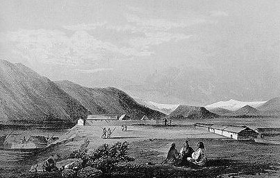
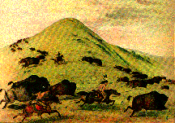
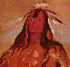
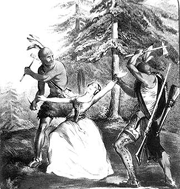
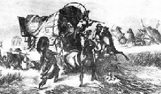
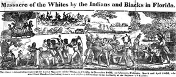
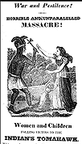
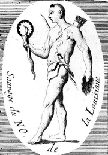
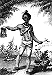

As stated in the Introduction, representations of American Indians in nineteenth century literature were seldom culturally relative. The authors failed to understand American Indians within the context of their separate cultures; instead, Indians became homogenized as the alien "Other," treated in terms of one of two polarizations: as the essentialized ideal, or the degenerated demon. While Cooper and Twain are icons on either end of the nineteenth century, acting as beacons for this polarization, there is a wide range of nineteenth-century authors whose characterizations of American Indians fall within this spectrum of polarization. The following is not an exhaustive list, but a brief outline of major nineteenth century authors who approached the subject of American Indians in their work.
In his fiction such as The Sketch Book, Washington Irving (1783-1859) allegedly developed a romantic portraiture of the Native American. In the following excerpt, Irving identifies American Indians with nature and lavishes praise upon their "natural" state: "There is something in the character and traits of the north American savage taken in connection with the scenery over which he is accustomed to range, its vast lakes, boundless forest, majestic rivers, and trackless plains that is, to my mind, wonderfully striking and sublime..." (qtd. in Zolla 97).
|  |
| Fort Okanogan as it appeared in the 1850's, by John Mix Stanley. Choosen to illustrate Irving's text Astoria in the 1964 University of Oklahoma Press Edition. Notice the artist's careful melding of American Indian life with the surrounding landscape. |
 Traits of Indian Character
from The Sketch Book
Traits of Indian Character
from The Sketch Book
Synopsis and Excerpt from A History of New York Includes an excellent introduction from White on Red.
The work of artist George Catlin (1796-1872) is closely aligned with, and resonant of, Cooper's texts.
 From 1830 to 1836 Catlin traveled from St. Louis to the Southwest. During his travels he recorded what he saw both in travel books and in the form of 470 portraits, landscapes, and other paintings detailing Plains Indians. Although much of Catlin's work retains realistic details, pieces such as this painting of doe-eyed buffalo running free over a verdant prarie and the Noble Red man to the bottom left sentimentalize American Indian life before the coming of white civilization.
 In Savagism and Civilization, Pearce asserts that "In [Catlin's] Letters and Notes on the Manners, Customs, and Condition of the North American Indians (1841), Catlin insists that he aimed to preserve in portraits and scenes the true Indians; he has gone as far West as possible to see the Indian as he really is, as he really was before the coming of the white man. For Catlin, Plains Indians are natural men, living according to standards which are perfectly adequate for savages" (111-112).
Lydia Maria Child's (1802-1880) Hobomok in Hobomok: A Tale of Early Times is a wonderful specimen of the noble red savage. In her preface, Child asserts that Hobomok is her version of Cooper's Pioneers because it depicts the destruction of "heroic savage life." (qtd. in Pearce 214). Child believed "it is only apart from civilization that that [savage] nobility could survive" (Pearce 214), thereby reiterating and reinscribing the Noble Savage myth in the nineteenth-century American canon.
Excerpt from Hobomok: A Tale of Early Times. Includes an excellent introduction from White on Red.
Like Mark Twain, who reacted against the sentimentalizing tendencies of authors such as Irving, Catlin, and Child, Francis Parkman (1823-1893) was concerned with deconstructing the Noble Savage image of American Literature. In 1846, Parkman traveled in the American West and recorded the contempt he felt when he met Indians along his way. In The Writer and the Shaman, El�mire Zolla asserts that Parkman's "epitaph on the death of the indigenous civilization was frigid":
The Indians melted away, not because civilization destroyed them, but because their own ferocity and intractable indolence made it impossible that they should exist in its presence. Either the plastic energies of a higher race or the servile pliancy of a lower one would, each in its way, have preserved them: as it was, their extinction was a foregone conclusion.
In Savagism and Civilization, Pearce asserts that when Parkman reviewed the 1852 revised edition of Cooper's novels, he objected to "Cooper's Indians as being softened out of reality; they were, he concluded, 'for the most part either superficially or falsely drawn. 'Yet he had nothing but praise for Cooper's conception of Leatherstocking...Parkman could not know, as we do, that Leatherstocking's life is defined in terms of that of the very Indians in whom he cannot believe, that the lives of both are equally the product of civilized imagination making a civilized fiction" (209).
Excerpt from The Conspiracy of Pontiac. Includes an excellent introduction from White on Red.
In 1840, John James Audubon, the famous naturalist, retraced George Catlin's travels and became disillusioned with Native Americans much in the same manner as Twain illustrated his disillusionment with Cooper's Indians in texts such as Huck and Tom Among the Injuns and Niagara.
In The Writer and the Shaman, Elemire Zolla re-counts Audubon's travels:
"From 1840 to 1843 Audubon, the great and sensitive naturalist, followed the itinerary of the painter Catlin and kept a journal in which he upbraided his predecessor for his Cooperian benevolence toward the Indians. Everything about them appears to him either contemptible or ridiculous. This, for instance , is his description of a medicine man's tent:
We had entered this curiosity shop by pushing aside a wet elk skin stretched on four sticks.
Looking around I saw a number of calabashes, eight or ten otter skins, two very large buffalo skulls with horns on, evidently of great age, and some sticks and other magical implements with which none but a "Great Medicine Man" is acquainted. During my survey there sat, crouched down on his haunches, an Indian wrapped in a dirty blanket with only his filthy head peeping out.
"The starving, filthy Indians eat putrefied animals and Audubon exclaims, "Ah! Mr. Catlin, I am sorry now to see and to read your accounts of the Indians you saw. We saw here no 'carpeted prairies,' no 'velvety distant landscape.' Every contact with the Indians is repulsive. They approach some famous warriors: 'Their very touch is disgusting--it will indeed be a deliverance to get rid of all this 'Indian poetry'"(138).
Although these images are not necessarily contemporary with Twain's work, they all share the common trait of demonizing the Native American.
|  | An 1846 Currier and Ives print depicting the murder of Jane McCrea |
|  | An engraving from the 1850s highlighting conflict resulting from white expansionism into the west. |
|  | A woodcut depicting anti-Indian sentiments in the Second Seminole War. Available from American Historical Images on File |
|  | A broadside exploiting anti-Indian sentiment |
|  | An engraving depicting an Indian from the Southeast flaunting his trophy. Available from American Historical Images on File |  | An engraving depicting an Indian from the Southeast flaunting his trophy. Available from American Historical Images on File |
{kind=link}
{kind=link}
{kind=link}
{kind=link}
{kind=link}
{kind=link}
{kind=link}
{kind=link}